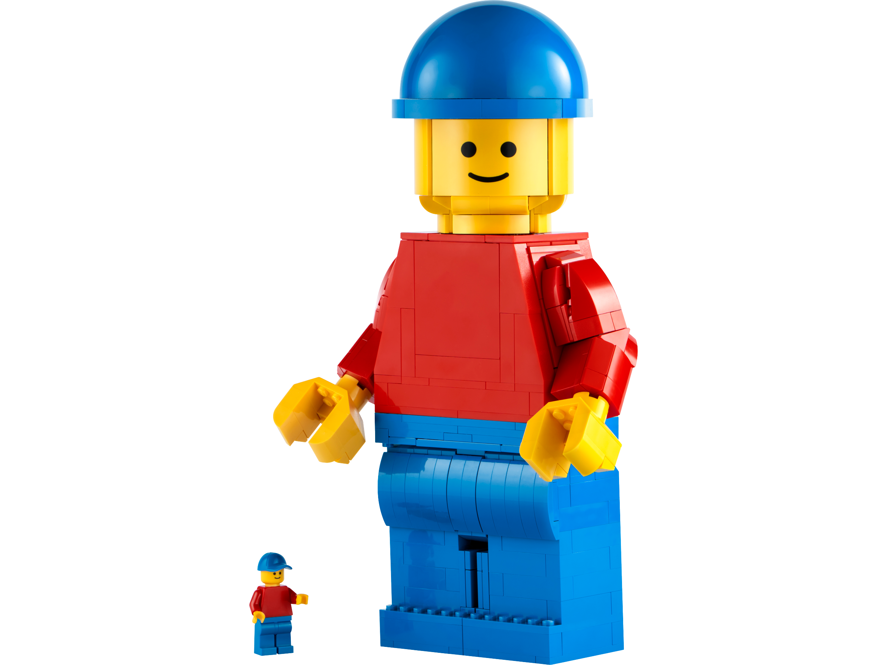

Will Algorithms be able to predict a brands future?
Brand building has always involved a bit of guesswork. Will this new logo resonate with customers? Is now the right time to enter a new market? Should we invest more in sustainability or influencer partnerships? These decisions can make or break a brand—and traditionally, they’ve been guided by gut instinct, focus groups, and historical precedent.
But now, a new kind of adviser is stepping onto the marketing stage: artificial intelligence. With its ability to process massive amounts of data and identify subtle patterns, AI is being used not just to analyze the past or optimize the present, but to predict the future. In other words, AI is becoming a kind of digital fortune teller for brands. But just how accurate is this algorithmic crystal ball? Can it really forecast the success—or downfall—of a company?
AI as Oracle: How Brand Forecasting Works
The concept of predictive analytics isn’t new—but with today’s large language models (LLMs) and machine learning tools, the depth and granularity of forecasting has reached new heights.
Here’s how AI is being trained to predict brand trajectories:
Historical Data Input – AI models ingest years (or decades) of a brand’s history: revenue, marketing campaigns, product launches, press coverage, customer sentiment, social media trends, and more.
Market Comparison – Models cross-analyze this data with that of competitors, market trends, and consumer behavior patterns.
Trend Forecasting – Using time series analysis, NLP, and regression models, AI can project likely outcomes for campaigns, product launches, and rebranding efforts.
Scenario Simulation – Generative AI can simulate possible future narratives—what happens if a brand goes green? Adds a new subscription model? Partners with a celebrity? It’s like running dozens of “what-if” business scenarios instantly—no tarot cards required.
Case Study: A Brand AI Prediction Test
To see this in action, we ran an experiment using publicly available data for two well-known brands: Peloton and LEGO. We input key data from the past decade—revenue shifts, customer sentiment, press coverage, innovation timelines—into a forecasting model built using GPT-4 and supplementary machine learning tools.
Here’s what the AI “fortune teller” revealed:
Peloton: The Rise, Fall, and… Comeback?
* Prediction: Peloton’s popularity spike during the pandemic is unsustainable without a strategic pivot toward affordability and content diversification. * AI Forecast (2025-2027): * Moderate revenue recovery if the brand leverages lower-cost equipment and integrates with third-party fitness apps. * High churn risk unless community engagement is re-prioritized. * AI recommends expanding mental wellness offerings and entering B2B wellness partnerships (e.g., employers, hotels). * Takeaway: If Peloton stays premium-only, it risks long-term decline. AI sees a healthier future in democratization and diversification.
LEGO: Old Toy, New Tricks
 * Prediction: LEGO’s strategic investments in digital play (LEGO Super Mario, AR sets, and LEGO Fortnite) will continue to fuel global relevance. * AI Forecast (2025-2027): * High brand longevity due to nostalgic appeal and strong parent-child co-play. * Positive market sentiment tied to sustainability initiatives (bioplastics). * Predicted brand growth in Asia and licensing collaborations (e.g., anime franchises). * Takeaway: LEGO’s multi-generational appeal plus tech-forward innovation keeps it future-proof—for now.
When the Predictions Work
AI predictions can be remarkably accurate—especially when grounded in good data and measured against real market shifts. Here’s where the AI fortune teller shines:
- Spotting Patterns Humans Miss AI can detect micro-trends in customer reviews, social chatter, and competitor moves that may be too subtle or scattered for humans to notice.
- Speed at Scale Humans need weeks to pull off a market analysis. AI can do it in seconds, including simulations across multiple markets or audience segments.
- Data-Driven Decision Making Want to know whether to launch a new product line in Q4 or Q1? AI can compare historical performance, seasonal interest, and audience behavior to recommend the best timeline.
- Crisis Prevention AI can flag warning signs in consumer sentiment or press mentions, allowing brands to course-correct before a PR crisis snowballs.
But Can AI Really Predict the Future?
As powerful as it is, AI is not a psychic. It makes informed projections—not actual prophecies. Here’s where its crystal ball gets a little cloudy:
- Unpredictable Black Swans Pandemics, sudden geopolitical changes, or unexpected virality (think GameStop stock or the Barbie movie) can’t always be forecasted.
- Emotional Shifts AI struggles to predict collective mood changes, cultural zeitgeists, or emotional reactions to branding missteps—areas where human instinct still dominates.
- Garbage In, Garbage Out AI predictions are only as good as the data they’re trained on. Biased, incomplete, or outdated data can lead to misleading forecasts.
- Innovation Blind Spots Disruptive innovations—think TikTok in its early days—often fall outside the AI radar because there’s little precedent to model from.
Should Brands Trust the Algorithm?
The short answer: yes—but not blindly. The most successful companies today are using AI not as a magic 8-ball, but as a strategic partner. Here’s what that looks like in practice: * Forecasting Sales Pipelines based on historical buying behavior and regional trends. * Simulating Campaign Performance before launch to A/B test creative strategies. * Identifying Emerging Markets before competitors get there. * Planning Product Lifecycle Strategies with predictive customer demand modeling.
When paired with human insight, creative risk-taking, and ethical oversight, AI can help brands stay ahead of the curve—without losing the soul that made them special in the first place.
So, Is AI the Future of Branding?
The AI “fortune teller” won’t replace marketers, strategists, or creative directors—but it will change how they work. In the next five years, expect to see more brands using AI to validate decisions, minimize risk, and future-proof their growth strategies. In the long run, the real winners will be those who know how to combine AI’s predictive power with uniquely human intuition. Because the future of branding isn’t fully artificial—it’s a collaboration.